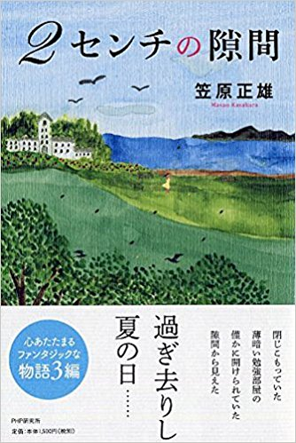

2015年12月に『2センチの隙間』をHPにアップしました。そして3年の間に1000人に近い沢山の人達にご愛読いただきました。深く感謝しています。
この3年間に
“手に持ってペラペラ好きなページをめくって読みたいなぁ……”
といった内容のお話を読んで下さった方々から戴きました。
ここ1,2年考え続けましたが、私もまた
“好きなページをペラペラめくりながら読んでみたい”
“コーヒーラウンジで本を片手にコーヒーやティーを飲みながら読んでみたい”
と思いました。
そしてこの3月念願叶って本を出版し、世に送り出すことができました。
お近くの書店にてお申し込み下さい。Amazonで購入することもできます。

どんな本か具体的に分かっていただけるようPART1を残しておきます。
よろしくお願い申し上げます。
引き続き、つくり話第6作目『ムクノキの大王物語』を執筆しています。
5月にはPART1をHPにアップ予定でございます。引き続き当HPをご訪問下さいまして、お読み下さるようお願い申し上げます。
前記 2015/12/28 upload
PART1『車内にて』の巻 2015/12/28 upload
PART2『苦しさ一杯、我が浪人時代』の巻 2015/12/28 upload
PART3『我が回想：水遣りの女神』の巻 2016/2/6 upload
PART4『我が回想：楽しかりし、A子との日々』の巻 2016/2/6 upload
PART5『我が回想：A子は何処へ？』の巻 2016/2/27 upload
PART6『再びA子を訪ねて』の巻 2016/2/27 upload
PART7『枯山水のお庭』の巻 2016/3/29 upload
PART8『自由の身』の巻 2016/5/4 upload
PART9『千両ヶ池』の巻 2016/8/8 upload
後記 2016/8/8 upload